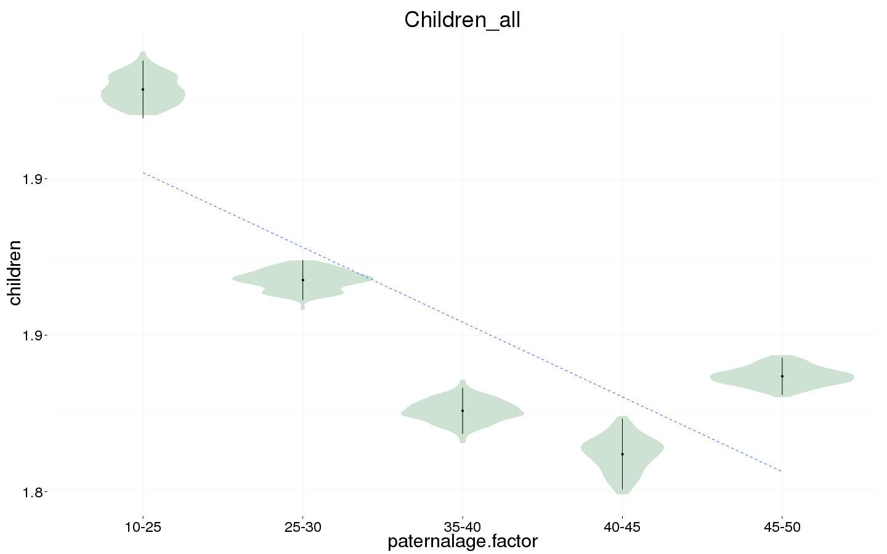

library(data.table); library(ggplot2); library(knitr); library(lme4); library(blme)
opts_chunk$set(warning=TRUE, cache=F,cache.lazy=F,tidy=FALSE,autodep=TRUE,dev=c('png','pdf'),fig.width=20,fig.height=12.5,out.width='1440px',out.height='900px',cache.extra=file.info('swed1.rdata')[, 'mtime'])
source("0__helpers.R")
load("coefs/swed_nonlinear_all_children2_models.rdata")boot
Children_all_boot = plot_factor_response(Children_all, ncpus = 20)
name = "swed_nonlinear_all_children"
save(list = lstype('confint.merMod'),file=paste0("coefs/",name,"_coefs.rdata"))
save(list = lstype('boot'),file=paste0("coefs/",name,"_boot.rdata"))
save(list = lstype(),file=paste0("coefs/",name,"_models.rdata"))sessionInfo()## R version 3.1.0 (2014-04-10)
## Platform: x86_64-redhat-linux-gnu (64-bit)
##
## locale:
## [1] LC_CTYPE=en_US LC_NUMERIC=C LC_TIME=en_US
## [4] LC_COLLATE=en_US LC_MONETARY=en_US LC_MESSAGES=en_US
## [7] LC_PAPER=en_US LC_NAME=C LC_ADDRESS=C
## [10] LC_TELEPHONE=C LC_MEASUREMENT=en_US LC_IDENTIFICATION=C
##
## attached base packages:
## [1] splines grid methods stats graphics grDevices utils
## [8] datasets base
##
## other attached packages:
## [1] Hmisc_3.14-6 Formula_1.2-0 survival_2.37-7 lattice_0.20-29
## [5] dplyr_0.4.1 stringr_0.6.2 boot_1.3-14 pander_0.5.1
## [9] blme_1.0-2 lme4_1.1-7 Rcpp_0.11.4 Matrix_1.1-5
## [13] ggplot2_1.0.0 data.table_1.9.5 knitr_1.9
##
## loaded via a namespace (and not attached):
## [1] acepack_1.3-3.3 assertthat_0.1 chron_2.3-45
## [4] cluster_2.0.1 colorspace_1.2-4 DBI_0.3.1
## [7] digest_0.6.8 evaluate_0.5.5 foreign_0.8-62
## [10] formatR_1.0 formr_0.1.11 gtable_0.1.2
## [13] labeling_0.3 latticeExtra_0.6-26 magrittr_1.5
## [16] MASS_7.3-37 minqa_1.2.4 munsell_0.4.2
## [19] nlme_3.1-119 nloptr_1.0.4 nnet_7.3-8
## [22] parallel_3.1.0 plyr_1.8.1 proto_0.3-10
## [25] RColorBrewer_1.1-2 reshape2_1.4.1 rpart_4.1-8
## [28] scales_0.2.4 tools_3.1.0date()## [1] "Fri Apr 3 00:03:49 2015"